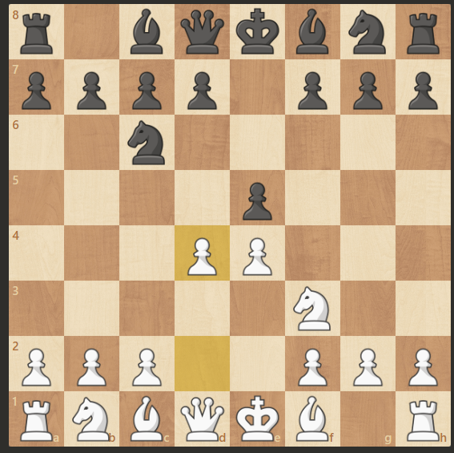
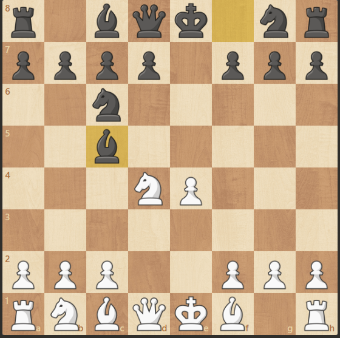
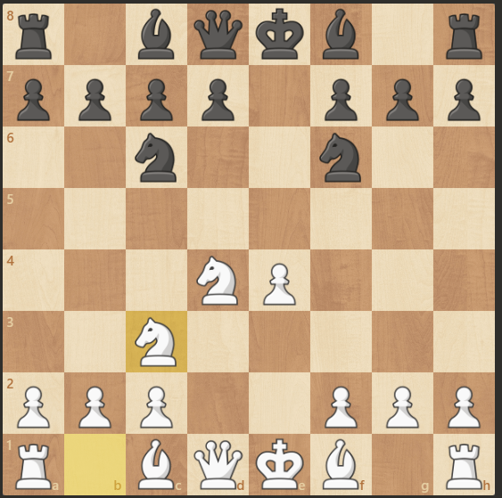

El ajedrez es un juego de estrategia que desarrolla la mente, mejora la concentración y potencia la capacidad de tomar decisiones.
La apertura escocesa es una de las más sencillas y recomendadas para principiantes. Comienza con:
1. e4 e5 2. Cf3 Cc6 3. d4
Después de 3... exd4 4. Cxd4 Ac5, las piezas negras desarrollan rápido y las blancas buscan controlar el centro.
Tras 3... exd4 4. Cxd4 Cf6, las negras atacan el peón de e4 y la partida se vuelve muy táctica.
